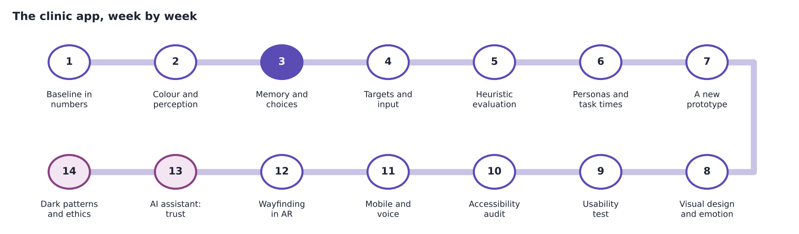
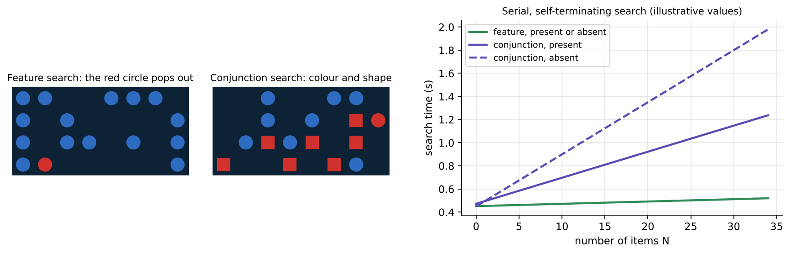
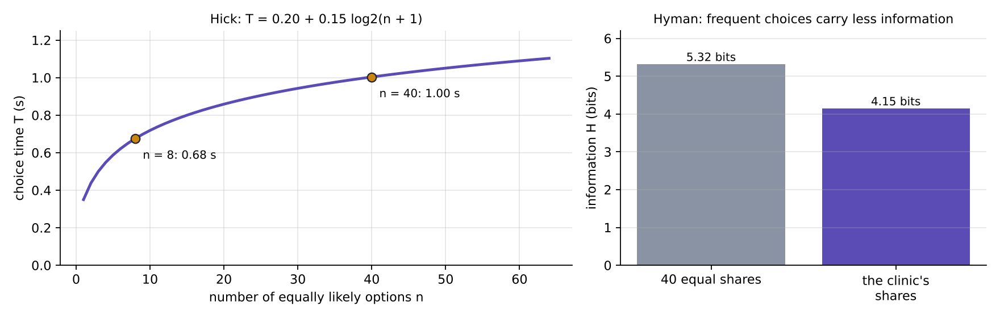
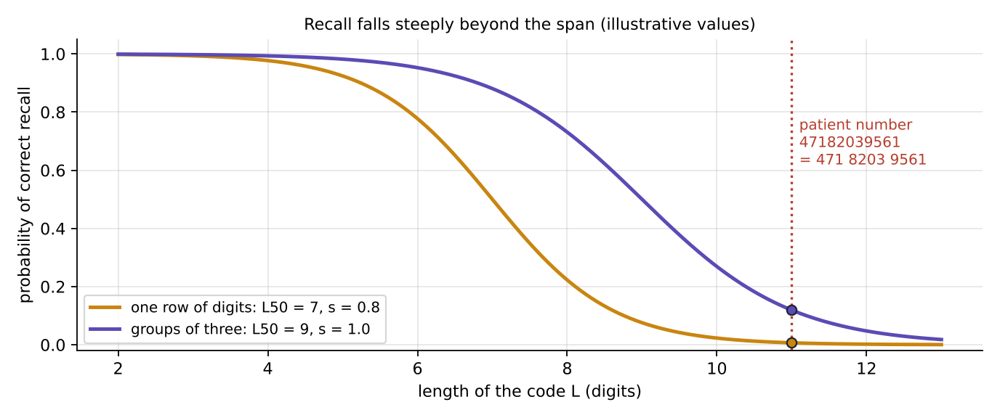
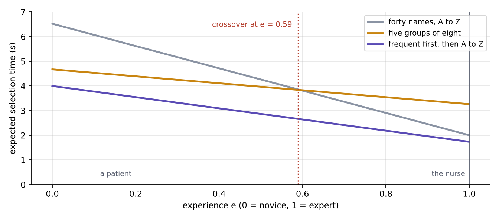
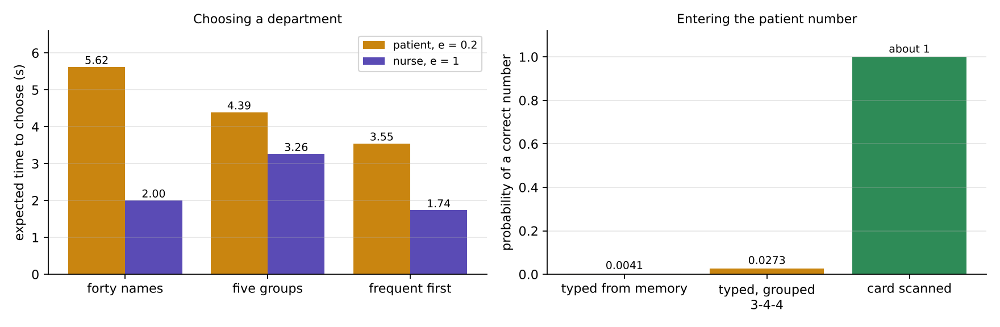

Overview
Week 2 asked whether patients can see the screens of the clinic app. This week asks what they do with what they see. Attention selects a little of it, working memory holds a little of it for a few seconds, and a decision turns it into an action. Each of the three is limited, and each limit has a number. People never take exactly the same time twice, so the numbers come from many measured trials. A search through more items takes longer, and so does a choice among more options. The week turns both observations into formulas: The time of visual search and the Hick-Hyman law of choice. It adds the span of working memory and the power of defaults, and it joins search and choice in a model of menus from the novice to the expert. The clinic app reaches stage 3, menus and forms that need less memory, and the week closes with the attention that people give to suggestions of artificial intelligence (AI).
Week at a glance
flowchart LR A["Attention and visual search"] --> B["The Hick-Hyman law"] B --> C["Memory"] C --> D["Decisions and defaults"] D --> E["Menus: From search to decision"] E --> F["Interface clinic"] F --> G["The human side"] G --> S["The clinic app, stage 3"] S --> H["Toward human-AI interaction"]
Every method on this page is also written as Python code in the Colab notebook of the week. Its code is divided into numbered sections. Each orange box on this page names the section whose code carries out what the text above the box explains. The box says what to run and what to look at in that section, and its button opens the Colab notebook at that place. The games, the practice parts and the self-assessment of the week are in the interactive lab. Each violet box opens one part of the interactive lab. The part ends with a link back to its box on this page, and the Colab notebook is always opened from the orange boxes here.
Python step 3: Random numbers, timing and a first fit
Python code in the Colab notebook, right after Section 0 (setup). Open the Colab notebook and run this step cell by cell: It consists of short pieces of Python code with their explanations, a quick check and three exercises. Topics: Random numbers · Simulated reaction times · Measuring the duration of code · A straight line through points.
The step continues with Python [1] and NumPy [2]. It draws random numbers with a generator that can be repeated exactly, simulates reaction times and summarises them with the mean, the median and percentiles. It measures how long a piece of code runs, the way an experiment measures a reaction. Finally, it fits a straight line through mean times measured with different numbers of items. Students who have never programmed start with the start-here notebook of the course.
Week 1 measured the booking flow: 10.9 percent of the patients give up. Week 2 audited what the patients see. Five of nine colour pairs fail the contrast criterion, the kiosk prompts are too small, and the status colours rely on colour alone.
This week audits what the patients must find, remember and decide. Stage 3 compares three menus for choosing one of forty departments. It also measures the memory that the forms demand and counts the patients who keep a default that does not suit them.

Attention and visual search
A screen offers far more than a person can process at once. Attention selects a small part of it for further processing, much like a spotlight that lights one region at a time. Where the spotlight goes depends on the goal of the person and on the display. A search for an item on a screen is called visual search, and its time depends on how the target differs from the other items, the distractors.
Treisman and Gelade showed that some targets pop out [3]. A red circle among blue circles differs in one feature, colour, and is found equally fast among few or many distractors. This is feature search. A red circle among blue circles and red squares shares its colour with some distractors and its shape with others. Finding it requires a conjunction of two features, and the time grows with every added item, as if attention visited the items one by one.

A serial search that stops at the target inspects on average half of the items when the target is present, and all of them when it is absent. With \(N\) items, a base time \(a\) and a time \(c\) to inspect one item, the expected search times are
Here \(a\) covers everything that does not depend on the number of items, such as seeing the display and pressing a key, and both times are in seconds. The factor \((N + 1)/2\) is the mean position of a target that is equally likely to stand anywhere among the \(N\) items. Plotted against \(N\), both times are straight lines, and the slope of the absent line, \(c\), is twice the slope \(c/2\) of the present line.
A worked example. The kiosk shows 16 icons, and inspecting one takes \(c = 0.05\) s, with \(a = 0.40\) s. A present target is found after \(0.40 \)\({}+ 0.05 \times (16 + 1)/2 \)\({}= 0.40 \)\({}+ 0.05 \times 8.5 \)\({}= 0.40 \)\({}+ 0.425 \)\({}= 0.825\) s on average. Deciding that the target is absent takes \(0.40 + 0.05 \times 16 = 1.20\) s. Department names must be read, which takes far longer per item, say \(c = 0.25\) s. In an alphabetical list of 40 names, a patient finds a name after \(0.40 \)\({}+ 0.25 \times 20.5 \)\({}= 0.40 \)\({}+ 5.125 \)\({}= 5.525\) s on average.
Attention also decides what is not seen at all. Simons and Chabris asked observers to count the passes of a basketball team in a video. About half of them missed a person in a gorilla costume who walked through the scene [4]. This is inattentional blindness. An error message that appears far from where the patient is looking, or a status that changes while the patient reads something else, can stay unseen in the same way.
Check your understanding. In a conjunction search, a target that is present is found after 1.2 s with 20 items. What does a serial, self-terminating search predict for deciding that the target is absent?
- Name an element of an app that you always find at once and one that you always have to search for. What is different about them?
- A notification badge is a small red dot. Why does it pop out, and what happens when every icon has one?
- Where on the screen of the clinic kiosk would an error message be most likely to stay unseen?
Part A of the interactive lab measures your own search. The display of the 3D waiting room shows 4 to 32 icons. You decide as fast as you can whether a red circle is among them, in one block of feature search and one of conjunction search. Section 1 of the Colab notebook fits your search lines.
Interactive lab, Part A. Find the icon in 3D: Thirty-two displays on the waiting-room screen, in feature and conjunction search. The results can be copied into the Colab notebook.
Python code in the Colab notebook, Section 1. Open Section 1 of the Colab notebook and run it. The function search_time carries out the two formulas of this section and is checked on the worked example. Paste the results of Part A into MY_SEARCH, and the code fits a line for each kind of search and for present and absent targets. It prints the slopes in milliseconds per item and their ratio, and a figure draws the lines.
Choosing among options: The Hick-Hyman law
Once a person knows where everything is, searching gives way to choosing. Hick measured how fast people pressed one of up to ten keys when one of ten lamps lit up. The time grew with the logarithm of the number of options [5]. Hyman confirmed that the time grows with the information of the choice, measured in bits [6]. For \(n\) equally likely options, the Hick-Hyman law reads
\(T\) is the choice time in seconds, \(a\) the time that every choice needs and \(b\) the time per bit of information. The logarithm to base 2 counts how many yes-or-no questions single out one option, and the \(+1\) in Hick's form accounts for the possibility that no signal comes at all. The inverse \(1/b\) is the rate of gain of information in bits per second.
→ This formula with numbers, step by step: Lab Part B, first calculator, steps 1 to 5.
A worked example. With \(a = 0.20\) s and \(b = 0.15\) s per bit, a choice among \(n = 8\) options gives \(\log_2 9 = 3.17\) bits and \(T \)\({}= 0.20 \)\({}+ 0.15 \times 3.17 \)\({}= 0.20 \)\({}+ 0.476 \)\({}= 0.676\) s. Forty options give \(\log_2 41 = 5.36\) bits and \(T \)\({}= 0.20 \)\({}+ 0.15 \times 5.36 \)\({}= 0.20 \)\({}+ 0.804 \)\({}= 1.004\) s. Five times as many options cost less than half as much time again. The rate of gain is \(1/0.15 = 6.67\) bits per second.
Options are rarely equally likely. Hyman measured the information of a choice whose options \(i\) have the probabilities \(p_i\) as [6]
→ These formulas with numbers, step by step: Lab Part B, second calculator, steps 1 to 5.
Four options with the probabilities 0.5, 0.25, 0.125 and 0.125 carry \(H \)\({}= 0.5 \times 1 \)\({}+ 0.25 \times 2 \)\({}+ 0.125 \times 3 \)\({}+ 0.125 \times 3 \)\({}= 1.75\) bits. This is less than the 2 bits of four equal options, so \(T = 0.20 + 0.15 \times 1.75 = 0.463\) s. The bookings of the clinic app are similarly uneven: Six frequent departments take 70 percent of them. Their information is 4.15 bits instead of the 5.32 bits of forty equal shares, and Section 2 of the Colab notebook computes it.

The law holds for practised choices, when the person knows the options and their places. A novice who must first read the options is still searching, and search grows linearly rather than logarithmically. The model of menus later this week joins the two.
Check your understanding. With \(a = 0.20\) s and \(b = 0.15\) s per bit, how long does a choice between 3 equally likely options take?
Interactive lab, Part B. The two formulas of this section step by step: Hick's law with sliders for \(n\), \(a\) and \(b\), and the information of uneven choices for four distributions.
Part C of the interactive lab rebuilds Hick's experiment as a 3D control desk with eight lamp buttons. In four blocks, 1, 2, 4 or 8 lamps are in play, and you press the one that lights up.
Interactive lab, Part C. Hick lamps in 3D: Four blocks with 1, 2, 4 and 8 lamps, ten timed presses each, and a first fit of the Hick-Hyman law. The results can be copied into the Colab notebook.
Python code in the Colab notebook, Section 2. Open Section 2 of the Colab notebook and run it. The functions hick_time and information carry out the formulas of this section and compute the information of the forty departments. Paste the results of Part C into MY_LAMPS, and the code fits \(a\) and \(b\) for every student with np.polyfit on \(\log_2(n + 1)\). A figure shows the mean times against the information and the rates of the class.
Memory: Holding and recalling
Working memory holds the information that a task needs for a few seconds. Examples are the time slot that a patient just read and the code that the next screen will ask for. Its capacity is small. Miller noted that people repeat about seven items, plus or minus two, after hearing them once, and that the limit counts meaningful units rather than single symbols [7]. Cowan reviewed later work and concluded that, when rehearsal and grouping are prevented, the limit is about four such units [8].
The units are called chunks. The patient number 47182039561 has eleven digits, far beyond about four chunks if each digit is held alone. Read as 471 8203 9561, it becomes three chunks. Grouping helps, but the best design needs no memory at all. Norman distinguishes knowledge in the head from knowledge in the world [9]. Recognising an option that is shown is easier than recalling it from memory. A list of choices or a card reader therefore beats a field that asks a patient to type a number.
The probability of recalling a code correctly falls steeply with its length \(L\). A simple model of this course uses the logistic curve
The span \(L_{50}\) is the length recalled correctly half of the time, and the spread \(s\), in digits, sets how steeply the curve falls. The constant \(e = 2.718\) is the base of the natural logarithm. The curve is the reading curve of Week 2, turned around: Longer codes are recalled less often.
A worked example. Suppose that \(L_{50} = 7\) digits and \(s = 0.8\). For the 11-digit patient number, \((11 - 7)/0.8 = 5.00\) and \(e^{5} = 148.41\), so \(p = 1/(1 + 148.41) = 0.0067\). Fewer than one patient in a hundred types the number correctly from memory. If grouping raises the span to \(L_{50} = 9\) with \(s = 1.0\), then \((11 - 9)/1.0 = 2\), \(e^{2} = 7.39\) and \(p = 1/8.39 = 0.119\). Grouping helps, yet nine patients in ten would still fail.

Animation. The patient number 47182039561 enters working memory group by group. The slider sets how many digits form one group. Press Play: The groups move into four slots, and when more than about four chunks arrive, the oldest are pushed out. Three or four digits per group bring the number within reach.
Check your understanding. Why does a card reader help more than grouping the digits of the patient number?
- Collect three codes or numbers that an app made you copy from one place to another this month.
- Which of them could the app have filled in itself, and why did it not?
- Passwords are the codes that people must recall. How do password managers move them into the world?
Part D of the interactive lab measures your own span. The kiosk of the 3D lobby shows a booking code, waits three seconds and asks for it. The codes have 4 to 10 digits, in one row and in groups of three.
Interactive lab, Part D. Remember the code in 3D: Fourteen codes on the kiosk, in one row and in groups of three. The results can be copied into the Colab notebook.
Python code in the Colab notebook, Section 3. Open Section 3 of the Colab notebook and run it. The function p_recall carries out the formula of this section and is checked on the worked example. Paste the results of Part D into MY_CODES, and fit_span finds \(L_{50}\) and \(s\) for every student and for the whole class. A figure draws the share of correct codes against their length for both formats.
Decisions and defaults
Limited attention and memory shape decisions as well. People rarely compare every option with every other. They accept a good-enough option, follow a recommendation or keep what is already selected. The option that takes effect when a person does nothing is the default, and its power is large. Johnson and Goldstein compared organ donation under explicit consent and under presumed consent [10]. In their online experiment, the share of people who agreed to donate was about twice as high when donation was the default.
Not every popular claim about decisions holds. The claim that more options always overwhelm people, called choice overload, was tested in a meta-analysis of 63 conditions from 50 experiments with 5,036 participants [11]. The mean effect was virtually zero, with large differences between studies. Long lists cost time, as the previous sections showed, but they do not always discourage a choice.
Every form with a pre-selected option makes a decision for the people who do not change it. Suppose that \(N\) people use a form and a share \(q\) of them keeps the default. If the default is wrong for a share \(w\) of those, the number of people with an unwanted setting is
A worked example. The clinic app pre-selects the reminder by text message at every booking. Assume \(N = 600\) bookings a day, a share \(q = 0.80\) that keeps the default and a share \(w = 0.25\) for whom a text message is wrong. Then \(W = 600 \times 0.80 \times 0.25 = 120\) patients a day get a reminder that they cannot use. A default should therefore serve the people who keep it, be visible, and be easy to change.
Check your understanding. A form is used 1,000 times a day. Ninety percent keep its default, which is wrong for 10 percent of them. How many people a day end up with an unwanted setting?
- Which defaults did you accept when you installed your last app? Which of them served you, and which served the company?
- When is a default a helpful shortcut, and when does it become a manipulation? Week 14 returns to this line.
- Should the clinic app choose the earliest free slot by default? Who would gain and who would lose?
Menus: From search to decision
A menu needs both search and choice. A patient who books once a year reads the options, while the nurse at the front desk knows them by heart. Cockburn, Gutwin and Greenberg built a model of menu performance [12]. It uses visual search for novices, the Hick-Hyman law for experts and a gradual transition between them, plus the time to point at the item. A simplified form of their model gives the expected time to select an item as
The level of experience \(e\) runs from 0 for a novice to 1 for an expert. \(T_s\) is the search time of the first section and \(T_h\) the decision time of the Hick-Hyman law. \(T_p\) is the time to point and tap, which Week 4 computes and which is set to 1.0 s here. A menu with two levels adds the times of both levels and a second tap.
A worked example. The flat menu lists 40 departments from A to Z. A novice needs \(T_s = 5.525\) s and \(T = 5.525 + 1.0 = 6.53\) s, and an expert \(T_h = 1.004\) s and \(T = 2.00\) s. A typical patient with \(e = 0.2\) needs \(0.8 \times 5.525 \)\({}+ 0.2 \times 1.004 \)\({}+ 1.0 \)\({}= 4.420 \)\({}+ 0.201 \)\({}+ 1.0 \)\({}= 5.62\) s. A grouped menu of five body areas with eight departments each needs \(T_s = 1.15 + 1.525 = 2.675\) s and \(T_h = 0.587 + 0.676 = 1.263\) s, plus two taps. It gives the patient \(0.8 \times 2.675 \)\({}+ 0.2 \times 1.263 \)\({}+ 2.0 \)\({}= 4.39\) s, but the nurse \(1.263 + 2.0 = 3.26\) s, more than the flat list.
The two designs cross at about \(e = 0.6\): Below it the grouped menu is faster, above it the flat one. A third design keeps both groups of users fast. A split menu shows the six frequent departments at the top and the full list below them. Seven patients in ten find their department among the six, and the model gives 3.55 s for the patient and 1.74 s for the nurse.

Scene: Where attention goes. A patient searches the department menu of the kiosk for Eye diseases. The spotlight of attention moves from name to name for a patient on a first visit and jumps to the target for the nurse who books every day. The first row of buttons switches the menu between forty names, five groups of eight and a split menu with the frequent departments first. The readouts give the expected time over all departments from the menu model of this section. Drag the scene to look around.
Check your understanding. Why is the grouped menu slower than the flat list for the nurse?
Python code in the Colab notebook, Section 4. Open Section 4 of the Colab notebook and run it. The function menu_time carries out the model of this section for the three menus and any level of experience. A table checks the worked example, and a figure draws the curves and their crossover. The Explore panel changes the reading time, the share of frequent choices and the pointing time and draws the three times as bars.
Interface clinic: Memory and choice on the clinic screens, before and after
The four pairs below show screens of the clinic app before and after a redesign. Each pair names the limit of attention, memory or decision that the redesign respects.
Interface clinic: Who is the patient? The first screen of the kiosk, where the patient identifies himself or herself.
BeforeType the eleven-digit patient number
The screen asks for knowledge in the head: Eleven digits, about three times the span of working memory. Typed from memory, the number is correct for fewer than one patient in a hundred.
AfterScan the card, or recognise your name
The card reader removes the demand on memory, and the list of today's appointments lets a patient without a card recognise a name instead of recalling a number. Initials protect privacy.
Interface clinic: Carrying a code between screens. The confirmation step, which needs the booking code that an earlier screen showed.
BeforeType the code that the last screen showed
The patient must hold an eight-character code across a screen change, which exceeds about four chunks. A forgotten code means going back, and an interruption between the screens erases it.
AfterThe app carries the code
The app keeps what it already knows and shows it for checking. The patient recognises the booking instead of recalling it, and nothing is lost when the patient is interrupted.
Interface clinic: Settings of the reminder. The last step of the booking, where the app sets how the patient will be reminded.
BeforePre-selected for everyone
Most patients press Book without reading. The text reminder is wrong for a quarter of them, which gives 120 unusable reminders a day, and the offers serve the hospital, not the patient.
AfterAsked once, remembered, and nothing hidden
The question is asked at the first booking and stored, so later bookings need no decision at all. Offers are not part of booking, so they are not a box that patients overlook.
- Which of the four screens marked Before puts the most load on working memory, and how many chunks does it ask for?
- The split menu depends on knowing which departments are frequent. What should happen when that changes?
- Which redesign also helps the nurse at the front desk, and which helps only the patients?
The human side: Interruptions, age and stress
Attention and memory are fragile under real conditions. A nurse at the front desk is interrupted by phone calls and patients all day. Mark, Gudith and Klocke found that people compensate for interruptions by working faster, at the price of more stress, frustration, time pressure and effort [13]. Each interruption also costs the time to find the place again. With \(m\) interruptions and a resumption time \(r\) each, a task of length \(T_0\) takes
With 30 interruptions in a shift and \(r = 20\) s, the nurse loses \(30 \times 20 = 600\) s, ten minutes, just to resume. A booking screen that keeps the state of an unfinished booking and shows where it stopped shortens \(r\) for every interruption.
Age matters as well. Visual processing speed declines with age [14], so an older patient takes longer per item in a search and needs more time before a message disappears. Illness, pain and worry about a diagnosis compete for the same limited attention, so a patient in a hospital is rarely at full capacity.
A shopping list moves items from the head into the world. Without it, people remember a handful of items and forget the rest; with it, the only demand on memory is to look at the list. Good interfaces act like the list.
- Think of a patient who has waited two hours and is in pain. Which step of the booking flow would fail first, and why?
- How should the app behave when a patient is interrupted in the middle of a booking and returns ten minutes later?
The clinic app, stage 3: Menus and forms that need less memory
The formulas of this week now compare designs of the clinic app. The first table gives the expected time to choose a department, for a typical patient with \(e = 0.2\) and for the nurse with \(e = 1\).
| Menu | Patient, e = 0.2 | Nurse, e = 1 |
|---|---|---|
| Forty names, A to Z (current) | 5.62 s | 2.00 s |
| Five groups of eight | 4.39 s | 3.26 s |
| Frequent first, then A to Z | 3.55 s | 1.74 s |
The split menu saves the patient 2.07 s per booking and the nurse 0.26 s. At 600 bookings a day, the patients together save \(600 \times 2.07 = 1242\) s, about 21 minutes a day.
| How the patient number is entered | Probability of a correct number | Where |
|---|---|---|
| Typed from memory, one row of 11 digits | 0.0041 | Section 5 |
| Typed from memory, grouped 3-4-4 | 0.0273 | Section 5 |
| Hospital card scanned at the reader | About 1 | Design |
The probabilities come from the span curves of the simulated class in the Colab notebook. Typing the number from memory fails almost always, and grouping changes little. Copying it from the card works but costs time and typing errors, and scanning the card removes the demand on memory entirely. The current text-message default produces 120 unwanted reminders a day. Asking once at the first booking and remembering the answer removes them.

| Question of stage 3 | Answer of the audit | Where |
|---|---|---|
| Which menu suits patients and the nurse? | Frequent first: 3.55 s and 1.74 s | Section 5 |
| Can patients recall their number? | No: 0.4 percent from memory | Section 5 |
| How many unwanted defaults a day? | 120 text reminders | Section 5 |
Stage 3 gives the redesign three targets: A split menu of departments, a card reader instead of a number field and a reminder setting that is asked once. Week 7 builds them into a prototype, and Week 9 tests them.
Check your understanding. Which design wins for both the patients and the nurse in the stage 3 audit?
Interactive lab, Part E. A pharmacy app with 25 medicines in one list: A search time, a decision time and a selection time, computed by hand.
Python code in the Colab notebook, Section 5. Open Section 5 of the Colab notebook and run it. The code collects the results of stage 3 in the dictionary STAGE3. It holds the times of the three menus for patients and the nurse, the recall of the patient number from the fitted curves and the unwanted defaults. A figure draws the two panels of the figure above.
Your application
The same model applies to the menus of any app. The Colab notebook holds an application switch with four further apps: Online banking, an e-government service, food delivery and course registration at a university. Choose one and find the fastest menu for novices and for experts.
Python code in the Colab notebook, Section 6. Open Section 6 of the Colab notebook, set APP to one of the five names in the comment and run the cell. The code builds a flat, a grouped and a split menu for the size and the frequent items of the chosen app. It names the fastest design for three levels of experience.
Toward human-AI interaction
An AI assistant that suggests a department acts like a default: It saves attention and memory, and people tend to follow it. Parasuraman and Manzey reviewed how people use automated decision aids [15]. Automation bias leads to errors of omission, when people miss a problem that the aid does not flag, and errors of commission, when they follow a wrong suggestion. It occurs in novices and experts alike, and training or instructions do not prevent it.
The limits of this week explain why. Checking a suggestion costs attention and memory, the resources that the suggestion was meant to save. A good assistant therefore makes checking cheap: It shows the reason for its suggestion next to the alternatives, so that the patient recognises rather than recalls. Weeks 13 and 14 measure how people rely on such an assistant in the clinic app.
An assistant that writes Eye diseases, because you mentioned blurred vision above the list of departments lets the patient confirm in one glance or choose another. An assistant that books the department directly leaves no moment for attention to catch an error.
- When did you last accept a suggestion of an app without checking it? What would checking have cost?
- Should the clinic assistant pre-select its suggestion, like a default, or only display it? Argue for one.
Review cards
Select a card to turn it over.
References
[1] Van Rossum, G., & Drake, F. L. (2009). Python 3 Reference Manual. CreateSpace.
[2] Harris, C. R., Millman, K. J., van der Walt, S. J., Gommers, R., Virtanen, P., Cournapeau, D., Wieser, E., Taylor, J., Berg, S., Smith, N. J., Kern, R., Picus, M., Hoyer, S., van Kerkwijk, M. H., Brett, M., Haldane, A., Fernández del Río, J., Wiebe, M., Peterson, P., Gérard-Marchant, P., Sheppard, K., Reddy, T., Weckesser, W., Abbasi, H., Gohlke, C., & Oliphant, T. E. (2020). Array programming with NumPy. Nature, 585(7825), 357-362. https://doi.org/10.1038/s41586-020-2649-2
[3] Treisman, A. M., & Gelade, G. (1980). A feature-integration theory of attention. Cognitive Psychology, 12(1), 97-136. https://doi.org/10.1016/0010-0285(80)90005-5
[4] Simons, D. J., & Chabris, C. F. (1999). Gorillas in our midst: Sustained inattentional blindness for dynamic events. Perception, 28(9), 1059-1074. https://doi.org/10.1068/p281059
[5] Hick, W. E. (1952). On the rate of gain of information. Quarterly Journal of Experimental Psychology, 4(1), 11-26. https://doi.org/10.1080/17470215208416600
[6] Hyman, R. (1953). Stimulus information as a determinant of reaction time. Journal of Experimental Psychology, 45(3), 188-196. https://doi.org/10.1037/h0056940
[7] Miller, G. A. (1956). The magical number seven, plus or minus two: Some limits on our capacity for processing information. Psychological Review, 63(2), 81-97. https://doi.org/10.1037/h0043158
[8] Cowan, N. (2001). The magical number 4 in short-term memory: A reconsideration of mental storage capacity. Behavioral and Brain Sciences, 24(1), 87-114. https://doi.org/10.1017/S0140525X01003922
[9] Norman, D. A. (2013). The Design of Everyday Things (Revised and expanded edition). Basic Books. https://www.hachettebookgroup.com/titles/don-norman/the-design-of-everyday-things/9780465050659/
[10] Johnson, E. J., & Goldstein, D. (2003). Do defaults save lives? Science, 302(5649), 1338-1339. https://doi.org/10.1126/science.1091721
[11] Scheibehenne, B., Greifeneder, R., & Todd, P. M. (2010). Can there ever be too many options? A meta-analytic review of choice overload. Journal of Consumer Research, 37(3), 409-425. https://doi.org/10.1086/651235
[12] Cockburn, A., Gutwin, C., & Greenberg, S. (2007). A predictive model of menu performance. In Proceedings of the SIGCHI Conference on Human Factors in Computing Systems (pp. 627-636). ACM. https://doi.org/10.1145/1240624.1240723
[13] Mark, G., Gudith, D., & Klocke, U. (2008). The cost of interrupted work: More speed and stress. In Proceedings of the SIGCHI Conference on Human Factors in Computing Systems (pp. 107-110). ACM. https://doi.org/10.1145/1357054.1357072
[14] Owsley, C. (2011). Aging and vision. Vision Research, 51(13), 1610-1622. https://doi.org/10.1016/j.visres.2010.10.020
[15] Parasuraman, R., & Manzey, D. H. (2010). Complacency and bias in human use of automation: An attentional integration. Human Factors, 52(3), 381-410. https://doi.org/10.1177/0018720810376055